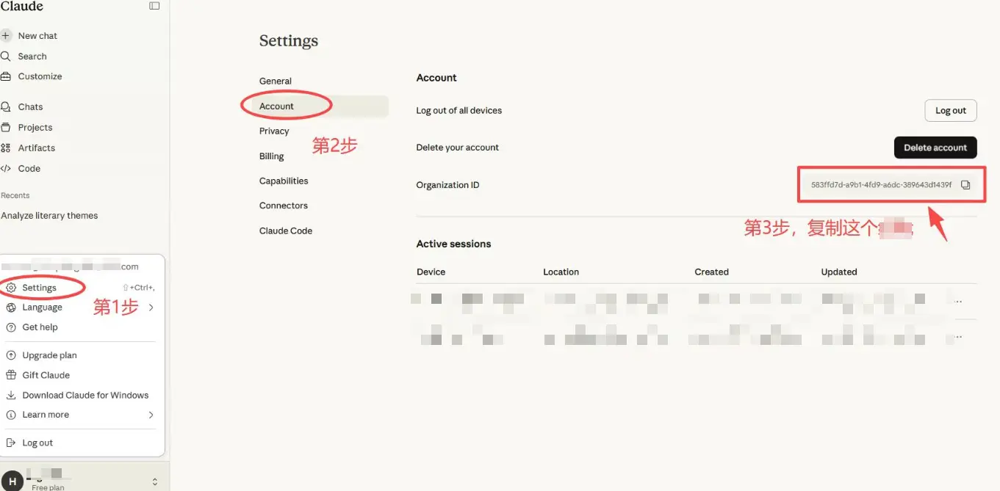
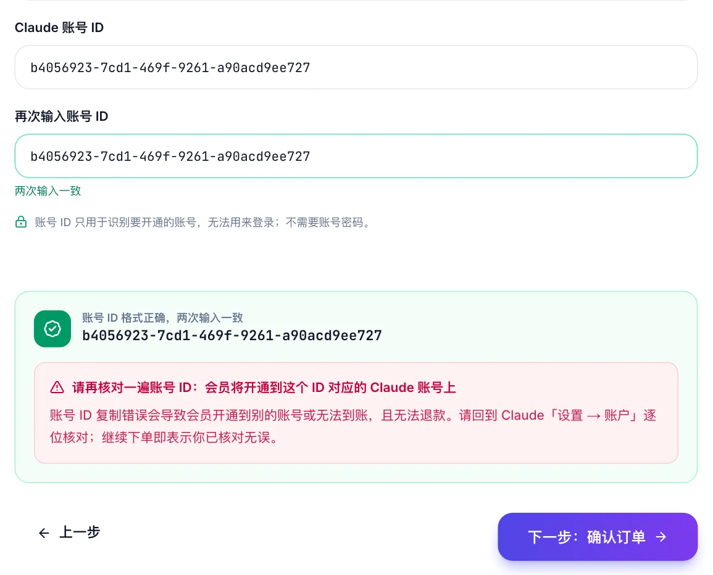
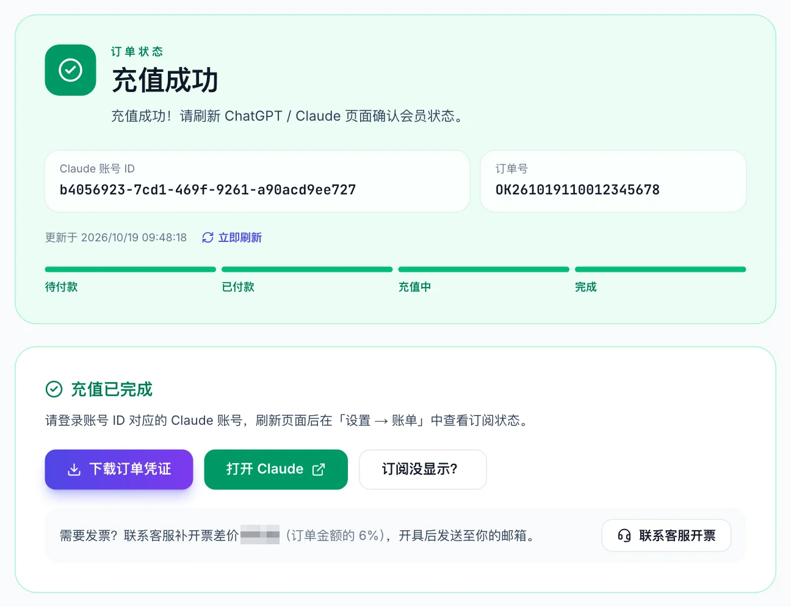

Claude Pro 国内开通指南（2026）：支付宝 / 微信付款，只要一个账号 ID
最后更新：2026 年 10 月 20 日 · 本页专门讲 Claude Pro。ChatGPT Plus 的四条路线对比和完整实测在 总览页。
Claude（claude.ai）是目前写作、编程、长文档分析最常被拿来和 ChatGPT 对比的 AI 助手，但在国内开通 Claude Pro 比开 ChatGPT Plus 还难一层。这篇把为什么难、还有哪条路能走、具体怎么操作、哪些地方容易翻车一次讲清楚。
不想往下看？直接去 okai66.com 开通 Claude Pro（支付宝 / 微信，只要账号 ID） →
为什么 Claude Pro 比 ChatGPT Plus 更难开
- 官网付款同样走 Stripe，国内银行发的双币卡、全币种卡基本都会被拒，和 ChatGPT 的情况一样。
- App Store 内购这条路对 Claude 基本无效。 ChatGPT 可以用美区 Apple ID + 礼品卡在 App 内订阅，但 Claude 对账号注册地区和使用地区的限制更严，很多人礼品卡买好了、App 也装了，订阅按钮却不出现，或者订阅后在网页端不生效。
- 虚拟信用卡成功率同样在下降，而且 Anthropic 对异常支付的回滚比 OpenAI 更干脆，掉订阅的概率更高。
所以到 2026 年，用人民币开 Claude Pro，实际可行的基本只剩代充一条路。好消息是，Claude 的代充交付方式比 ChatGPT 还简单安全：不需要密码，不需要会话信息，只要一个账号 ID。
Claude 套餐与价格（2026）
| 套餐 | 官方价格 | 适合谁 |
|---|---|---|
| Free | $0 | 偶尔问问题 |
| Pro | $20 / 月（年付约 $17 / 月） | 日常写作、代码、文档分析，绝大多数人的选择 |
| Max 5× | $100 / 月 | Pro 额度经常用完、重度用 Claude Code |
| Max 20× | $200 / 月 | 全天候跑 Claude Code / 多项目并行 |
说明：
- 代充价格 = 官方价 + 渠道成本 + 汇率，Pro 的人民币市场价和 ChatGPT Plus 接近，具体以下单页实时价格为准。
- Max 档位能否代充、价格多少，各平台不同，下单页有就能开，没有就是暂不支持。
- 明显低于 ¥140 的 Claude Pro 基本是黑卡或盗刷，开通后几天内会被回滚，见下文「掉订阅」。
实测：4 步开通 Claude Pro（只要 Organization ID）
以下是 2026 年 10 月在 OKAI66 上的实际操作，从付款到 Pro 生效通常几分钟。
第 1 步：复制你的 Organization ID
登录 claude.ai，点左下角头像 → Settings → Account，找到 Organization ID，是一串 8-4-4-4-12 格式的字符（例如 xxxxxxxx-xxxx-xxxx-xxxx-xxxxxxxxxxxx），复制下来。

这个 ID 只是你账号的「门牌号」，不是密码、不是登录凭证，别人拿到它既不能登录你的账号，也看不到你的对话。
第 2 步：在下单页粘贴 ID，系统自动校验
打开套餐页选 Claude Pro，把 ID 粘贴两次（防止手误），系统会自动校验这个 ID 是否有效、账号当前是什么套餐。

如果提示校验失败，99% 是复制时多了空格或少了字符，重新从 Settings 页复制一遍。
第 3 步：填联系方式，支付宝 / 微信付款
填一个手机号或邮箱（只用于查订单和售后），选支付宝或微信付款。电脑扫码、手机直接跳转。
第 4 步：等待到账，回 claude.ai 核对
付款后订单页依次显示「已付款 → 充值中 → 完成」。

回到 claude.ai 刷新页面（没变化就退出重登），在 Settings → Billing 里确认已经显示 Pro 和到期日。没充成功的订单原路退款。
照着这 4 步，现在就去开通 Claude Pro → okai66.com →
Organization ID 安全吗？
比 ChatGPT 的会话信息更安全。会话信息至少是一个临时登录凭证，而 Organization ID 只是一个账号标识：
- 拿到它不能登录你的账号、不能看对话、不能改密码或邮箱。
- 它唯一的用途是让平台知道「把订阅开到哪个账号上」。
- 你不需要在充值后更换任何东西。
所以挑 Claude 代充时，只要 ID 的平台优先；要你密码或要你共享登录的，直接排除。
掉订阅 ≠ 封号
- 掉订阅：Pro 标识消失，变回 Free，对话都在，可以重新开。通常是付款被 Anthropic 回滚（黑卡、来路不明的礼品卡）。
- 封号：账号无法登录，原因是账号行为（注册 / 使用时的 IP 被判为高风险、内容违规），和用什么方式付款无关。
正规渠道开通的 Pro 不会导致封号；低价黑卡代充最常见的后果是掉订阅。掉过订阅的账号之后会更容易被风控，所以第一次就选对渠道。
常见问题 FAQ
Q：Claude Pro 可以用支付宝直接付给 Anthropic 吗？
不能。claude.ai 官网只收信用卡，没有任何国内支付方式。所有「支付宝开 Claude Pro」都是第三方代充。
Q：我没有 Claude 账号怎么办？
先去 claude.ai 用邮箱注册一个免费账号（需要能收验证码的邮箱和海外手机号或可用的网络环境），有了账号才有 Organization ID。注册本身不收费。
Q：代充的 Pro 会自动续费吗？
不会。到期自动变回 Free，不会从你任何账户扣钱。到期前 1–2 天回来再充一次即可无缝衔接。
Q：Claude Max 能代充吗？
看下单页有没有对应档位。有就能开，流程和 Pro 完全一样；没有就是该平台暂不支持。
Q：充值失败怎么办？
正规平台会原路退款，当天退回原支付方式。超过 30 分钟订单还在「充值中」，带订单号联系客服。
Q：已经是 Pro 的账号再充会叠加时长吗？
不会叠加，新订阅会覆盖旧的。等快到期再充。
一句话总结
国内开 Claude Pro，2026 年能走通的基本只有代充；挑一个只要 Organization ID、不要密码、不成功原路退款的平台，几分钟搞定。
okai66.com — 支付宝 / 微信开通 Claude Pro →
相关页面
- ChatGPT Plus 国内开通指南（总览）：四条路线对比 + 支付宝微信实测
- ChatGPT Pro 国内充值指南：Pro 100 / Pro 200 怎么开
- ChatGPT 绑卡提示 Your card was declined 怎么办
关于本文
- 本文作者与 OKAI66 存在商业关系，该平台提供 ChatGPT / Claude 订阅的付费充值服务，请结合自身情况判断。
- OKAI66 为独立第三方服务平台，与 Anthropic、OpenAI、Apple 均无隶属关系。Claude、ChatGPT 等名称归其各自权利方所有。
- 内容按 CC BY-NC-SA 4.0 许可，转载请注明出处。